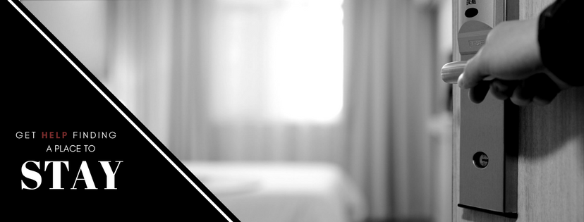
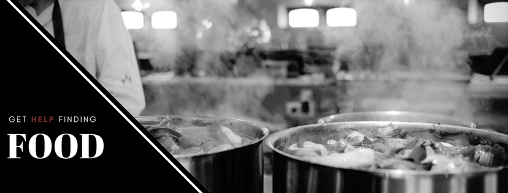
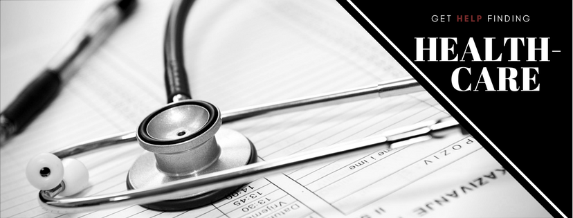
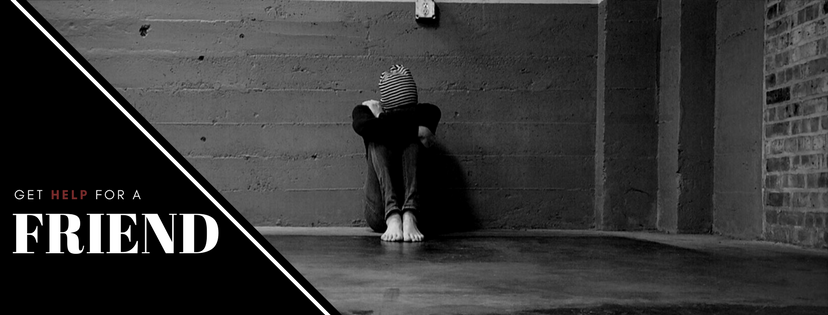
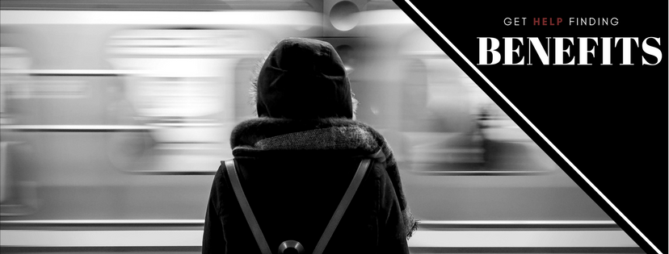

Get Help
If you or someone you know is homeless, you can use this page to direct you to the support that you need. There is no easy one-size-fits-all solution to homelessness and how to deal with it - we recommend calling and speaking to a professional on any of the numbers we detail below. The support you qualify for depends on your on your personal circumstances, your dependents and whether you need any help beyond finding a home or place to stay.
If you need to talk to someone now call one of these numbers:
| Organisation | Description | Contact Number | Shelter | Free Housing Support Help line - open from 8am-8pm on weekdays and 9am to 5pm on weekends. | 0808 800 4444 | Citizen's Advice | Provide practical information online as well as via the phone. Calls to this service cost the same as calling 01 and 02 numbers. | 03444 111 444 | Samaritans | Helpline is open 24/7. Call at anytime for practical, helpful advice. | 116 123 |
|---|
Shelter have a free Housing Advice Helpline on 0808 800 4444. They are open from 8am-8pm on weekdays and 9am to 5pm on weekends. Citizen’s Advice have online, practical information. Call them on 03444 111 444 (helpline for England). Calls to this service cost the same as calling 01 and 02 numbers. Samaritans have a helpline that runs 24/7 on 116 123 - read more on their website here.





